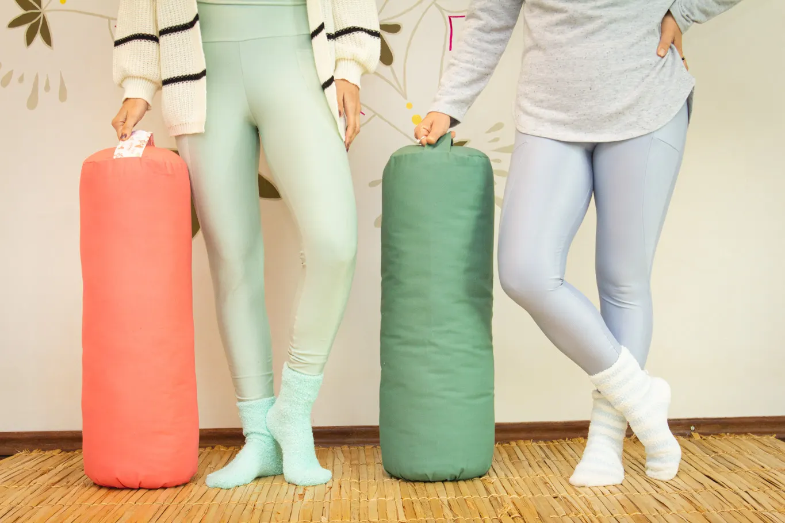
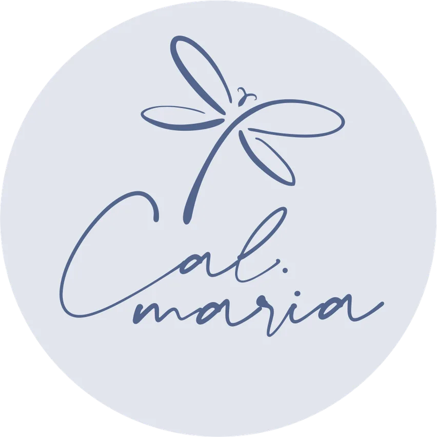
Catálogo de parceiros · 2026Almofadas para a prática
pausa
reflexão
reconexão
reflexão
reconexão
Fica com o azul-ardósia da marca e troca o visual de "folheto" por revista: foto grande de um lado, ficha técnica limpa do outro, cores e estampas na mesma página do produto (no original elas ocupavam páginas separadas). Boa para quem compra pela história e pela estética.


Catálogo de parceiros · 2026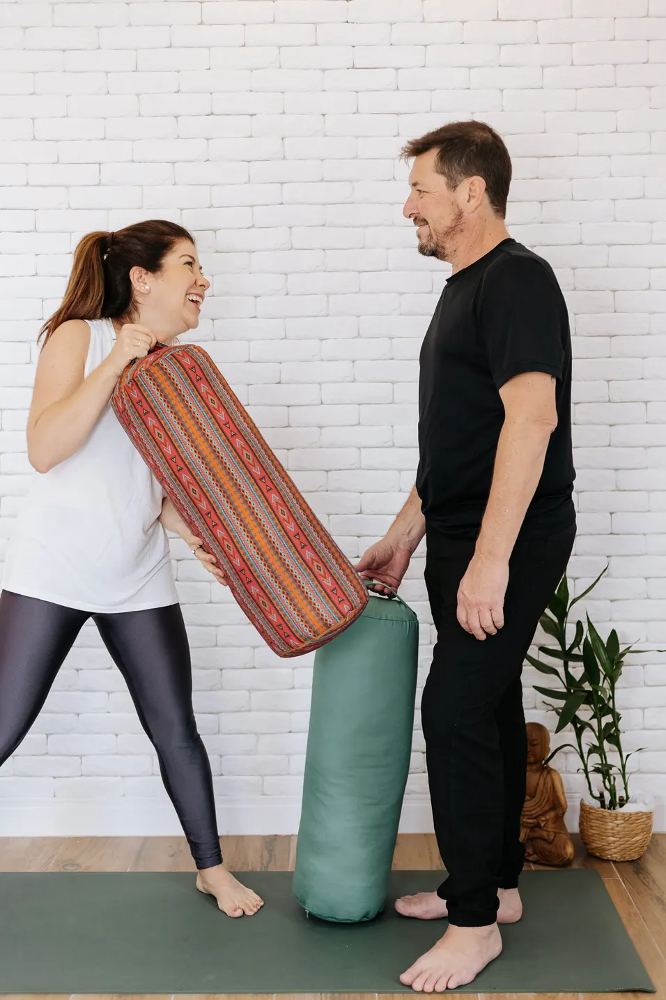
Feita para levar momentos de pausa, reflexão e reconexão.
Nossos produtos participam como protagonistas, com autoria e originalidade, trazendo mais presença ao autocuidado, tranquilidade, relaxamento, introspecção e conexão.
Pensamos uma linha que promove equilíbrio e desperta a sua prática de relaxamento, meditação e yoga, com leveza, conforto e alegria.
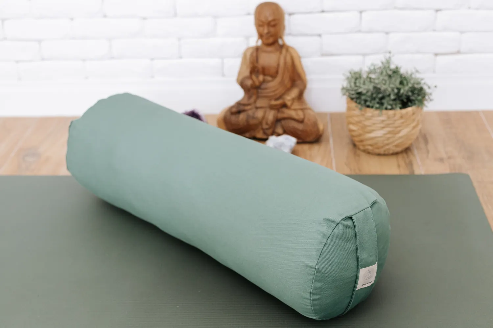
Almofadão para apoiar o corpo e trazer alívio sem tensão. Dá conforto e aumenta o alongamento nas posturas e no relaxamento.
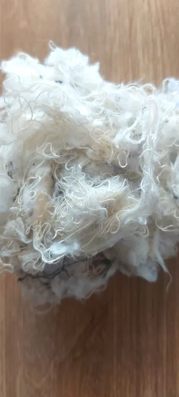
Enchimento: fibra de algodão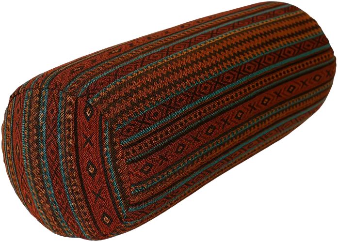
Tribal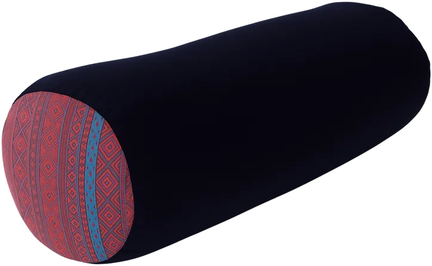
ÉtnicoA versão menor do bolster para apoiar o corpo e trazer alívio sem tensão, nas mesmas práticas restaurativas, yin, Iyengar e na gestação.
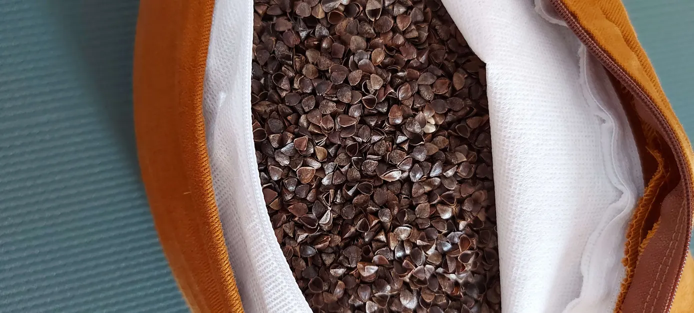
Enchimento: casca de trigo sarraceno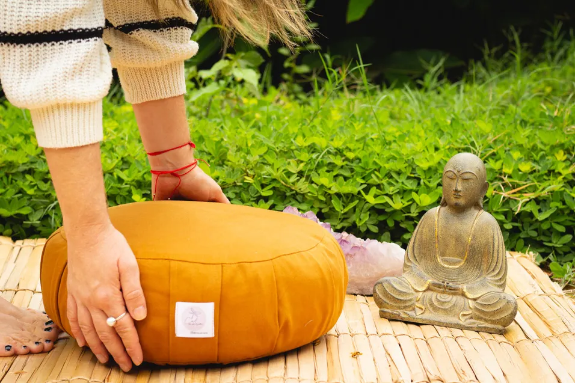
Almofada redonda que alinha e apoia a coluna e alivia a tensão de joelhos, quadril e tornozelos. A alça facilita levar para meditar ao ar livre, em grupo ou em curso.
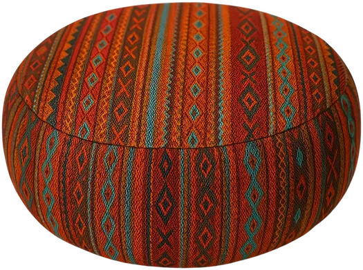
Tribal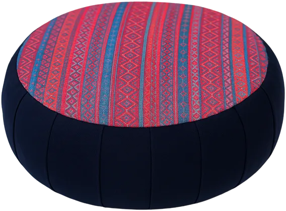
Étnico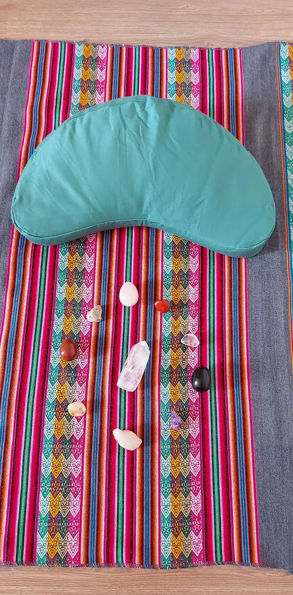
O enchimento de casca de trigo sarraceno se molda ao corpo e dá mais conforto e estabilidade na meditação de pernas cruzadas.
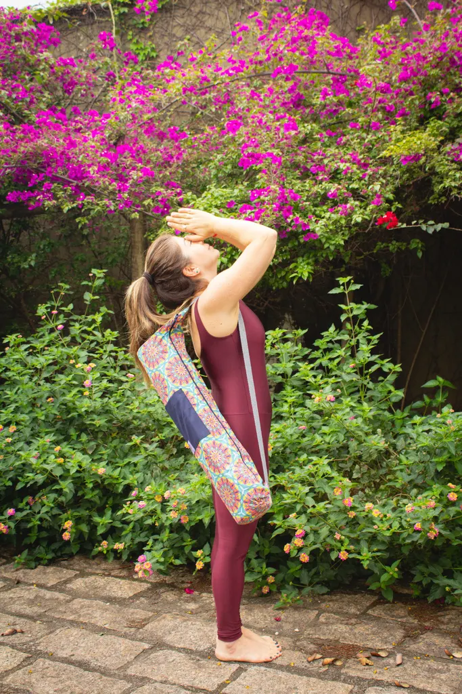
Guarde e transporte o tapetinho com estilo. Protege o mat e facilita levar para a prática em qualquer lugar.
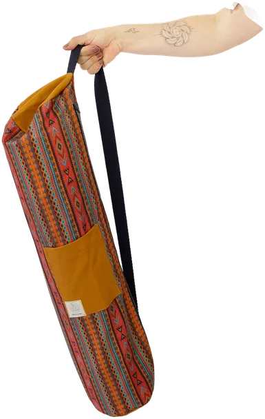
Tribal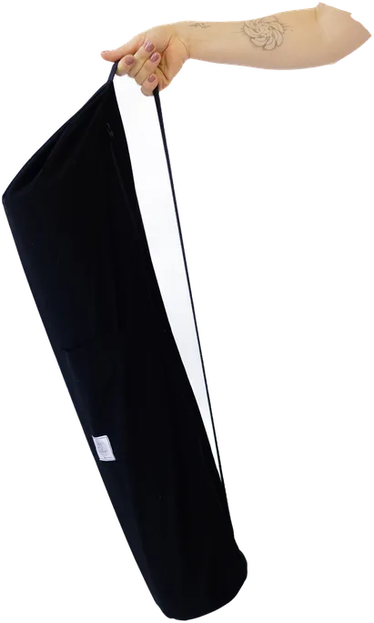
Preto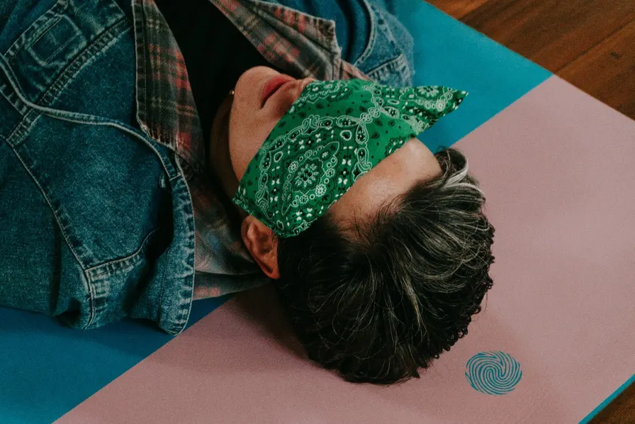
Tire alguns minutos e aproveite os benefícios da aromaterapia. Relaxe.
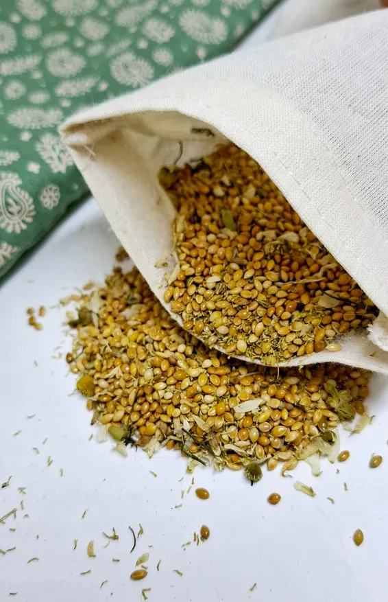
Recheio: ervas e sementes desidratadas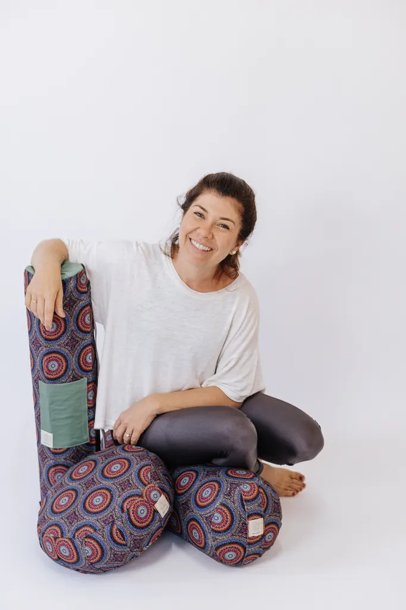
Sou a Tati, fundadora da Cal.maria. Pratico a filosofia desde 2009 e fiz minha primeira formação em yoga em 2018. Deixei o mundo corporativo da moda e dos eventos, onde trabalhei por anos, para unir yoga e tecido.
Cada tecido, estampa e processo passa pela minha curadoria, com o propósito de levar bem-estar, acolhimento e conexão para a prática de um jeito mais leve e colorido.
Para instrutores de meditação, professores de yoga, estúdios, retiros, eventos e lojas físicas ou online que querem oferecer uma experiência única ao seu público.
vivacalmaria.com.br · @viva.cal.maria
| Produto | Atacado mín. 10 pç | Revenda unitário |
|---|---|---|
| Bolster | R$ 187,63 | R$ 225,16 |
| Mini bolster | R$ 87,32 | R$ 104,78 |
| Zafu | R$ 119,15 | R$ 146,96 |
| Zafu meia lua | R$ 128,95 | R$ 154,70 |
| Descanso p/ olhos (personalizado) | R$ 54,00 | — |
Entrega em 20 dias após a entrada do pedido · frete por conta do cliente.
Mais alegre e com cara de Instagram: cada página é pintada numa das 7 cores da linha, a foto entra num arco (o formato do zafu) e as medidas viram números grandes. Tem uma página que mostra a linha inteira de uma vez. Combina com a frase da marca, "mais leve e colorida".
Almofadas de yoga e meditação em brim 100% algodão, em 7 cores e estampas de curadoria.
Almofadão que apoia o corpo e traz alívio sem tensão. Dá conforto e aumenta o alongamento nas posturas.
A versão compacta do bolster, com enchimento maleável, para apoiar o corpo e trazer alívio sem tensão.
Alinha e apoia a coluna e alivia joelhos, quadril e tornozelos. Com alça, vai junto para meditar ao ar livre, em grupo ou em curso.
O trigo sarraceno se molda ao corpo e dá mais conforto e estabilidade para quem tem flexibilidade sentado de pernas cruzadas.
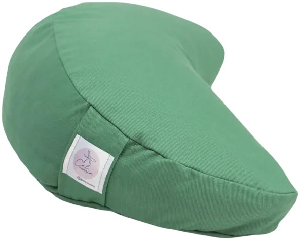
Protege o tapetinho e leva para a prática em qualquer lugar. Tem zíper e bolso.
Alguns minutos de pausa com recheio de ervas e sementes desidratadas, em camomila, erva-doce ou lavanda. Ideal para o relaxamento final. Disponível em versão personalizada.
Estúdios, professores, retiros e lojas. Pagamento 30% no pedido, 30% na entrega e 40% 20 dias depois. Entrega em 20 dias, frete por conta do cliente.
Escrito para o dono de estúdio ou de loja: abre dizendo para quem é, mostra a linha toda numa página com preço, compara as fichas técnicas lado a lado e deixa preço e condição de pagamento claros. Cabe num WhatsApp e responde as perguntas antes da conversa.
Tabela diferenciada para quem leva a prática ao seu público. Atacado a partir de 10 peças.

Apoio para restaurativo, yin, Iyengar e gestação.
R$ 187,63Versão compacta, enchimento maleável.
R$ 87,32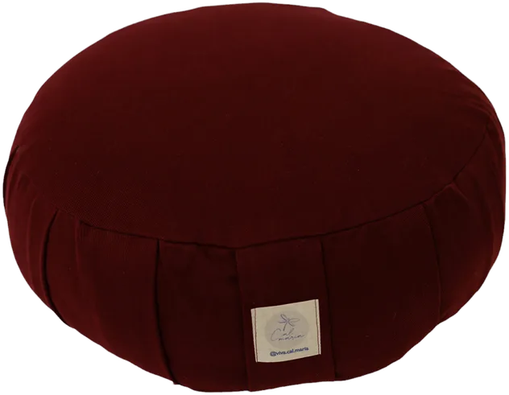
Meditação sentada, alinha a coluna.
R$ 119,15Molda ao corpo, para quem tem flexibilidade.
R$ 128,95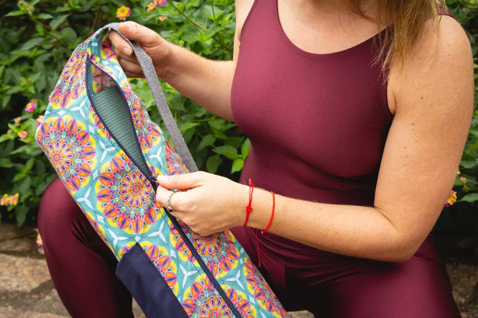
Para mat de até 6 mm, com zíper e bolso.
sob consulta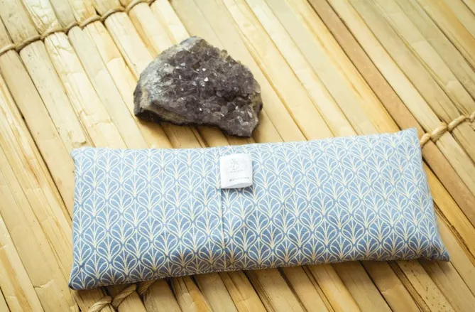
Ervas e sementes: camomila, erva-doce ou lavanda.
R$ 54,00| Produto | Medidas | Peso | Enchimento | Firmeza | Cores |
|---|---|---|---|---|---|
| Bolster | 75 × 22 cm | 3,40 kg | Fibra de algodão | Firme | 7 + tribal e étnico |
| Mini bolster | 38 × 14 cm | 1,00 kg | Trigo sarraceno | Maleável | 7 |
| Zafu | 34 × 12 cm | 1,60 kg | Fibra de algodão | Firme | 7 + tribal e étnico |
| Zafu meia lua | 50 × 12 cm | 1,50 kg | Trigo sarraceno | Maleável | 7 |
| Porta mat | 70 × 26 cm | — | — | — | Tribal e preto |
| Descanso p/ olhos | — | — | Ervas e sementes | — | Vinho, marinho, estampa mar |
| Produto | Atacado · mín. 10 pç | Revenda · unidade | Economia |
|---|---|---|---|
| Bolster | R$ 187,63 | R$ 225,16 | 17% |
| Mini bolster | R$ 87,32 | R$ 104,78 | 17% |
| Zafu | R$ 119,15 | R$ 146,96 | 19% |
| Zafu meia lua | R$ 128,95 | R$ 154,70 | 17% |
| Descanso p/ olhos | R$ 54,00 | — | personalizado |
Entrega em 20 dias após a entrada do pedido · frete por conta do cliente · estampas sujeitas ao estoque.
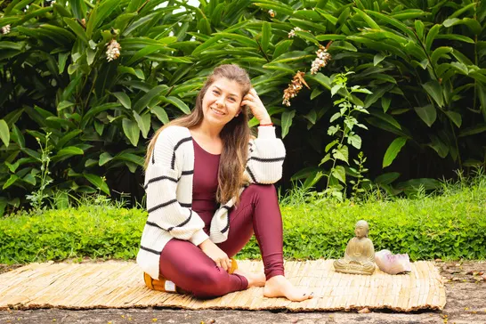
A Tati pratica a filosofia do yoga desde 2009 e se formou professora em 2018. Veio de anos no mercado de moda e eventos e juntou as duas coisas que ama: yoga e tecido. Cada tecido, estampa e etapa de produção passa pela curadoria dela.
Buscamos parceiros que vendem com alma e se importam com a história inteira do produto.
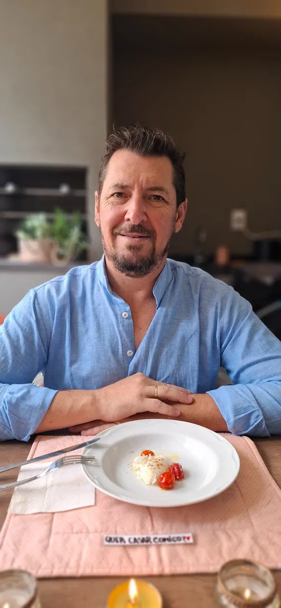
Juniorvivacalmaria.com.br · @viva.cal.maria
Saí totalmente do folheto: parece um caderno de colagem, com fotos polaroid presas com fita, peças recortadas espalhadas, anotações à mão apontando os detalhes e a tabela de preços em forma de cupom. Tem a cara de marca pequena com curadoria da Tati e chama atenção num grupo de WhatsApp.
Almofadas de yoga e meditação em brim 100% algodão, com cor e estampa escolhidas uma a uma.
(e a capa sai pra lavar!)Apoiam o corpo e trazem alívio sem tensão. Dão conforto e aumentam o alongamento nas posturas.
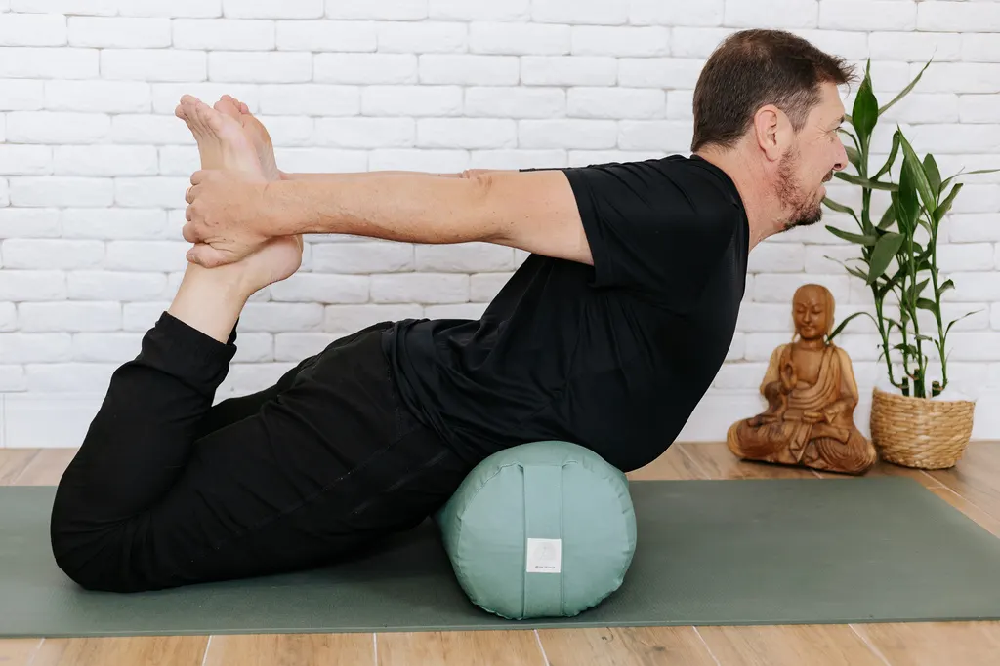
Alinham e apoiam a coluna e aliviam joelhos, quadril e tornozelos. Com alça, vão junto pra meditar ao ar livre, em grupo ou em curso.
Pratico a filosofia do yoga desde 2009 e fiz minha primeira formação em 2018. Deixei anos de moda e eventos pra trás pra juntar as minhas duas paixões: yoga e tecido.
Cada tecido, estampa e processo passa pela minha curadoria. Quero levar bem-estar, acolhimento e conexão pra prática, de um jeito mais leve e colorido.
Pra professora de yoga, instrutor de meditação, estúdio, retiro, evento e loja física ou online que quer oferecer uma experiência única pro seu público.
a gente vende com alma pra quem compra com gostoMuda formato e lógica. As páginas são verticais (cabem inteiras na tela do celular e servem de carrossel) e os produtos não aparecem em lista: aparecem na ordem da aula, de quem chega com o tapete ao relaxamento final. Fundo verde-musgo bem escuro, fotos grandes e letra fina, com um ar de spa e de retiro.
Almofadas e acessórios para cada momento da prática, de quem chega com o tapete a quem descansa no fim da aula.
Guarde e leve o tapetinho com estilo, protegido, para a prática em qualquer lugar.
Alinham e apoiam a coluna e aliviam joelhos, quadril e tornozelos. A meia lua se molda ao corpo de quem tem mais flexibilidade de pernas cruzadas.
Apoiam o corpo e trazem alívio sem tensão no restaurativo, no yin, no Iyengar e na gestação.
Alguns minutos de aromaterapia no relaxamento final.
Brim 100% algodão nas sete cores clássicas, e as estampas tribal e étnico conforme o estoque.
Todas as almofadas têm capa removível e lavável com zíper e alça para transporte.
Pratica a filosofia do yoga desde 2009 e se formou em 2018. Saiu da moda e dos eventos para unir yoga e tecido. Cada tecido, estampa e processo passa pela curadoria dela.
Atacado a partir de 10 peças. Pagamento 30% no pedido, 30% na entrega e 40% 20 dias depois. Entrega em 20 dias, frete por conta do cliente.
Tati Cal · (11) 9.9196-9115 · vivacalmaria@vivacalmaria.com.br
Junior · (11) 9.7489-0597 · atendimento@vivacalmaria.com.br
vivacalmaria.com.br · @viva.cal.maria